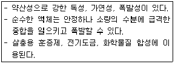
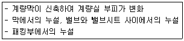
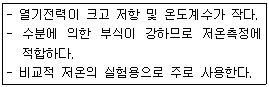

가스산업기사 (2012-05-20 기출문제)
1과목: 연소공학
1. 가연물과 그 연소형태를 짝지어 놓은 것 중 옳은 것은?
- 알루미늄 박 - 분해연소
- 목재 - 표면연소
- 경유 - 증발연소
- 휘발유 - 확산연소
(정답률: 77%)

2. 실제기체가 이상기체에 가까워지기 위한 조건으로 옳은 것은?
- 고온, 저압 상태
- 저온, 저압 상태
- 고온, 고압 상태
- 분자량이 크거나 비체적이 클 때
(정답률: 94%)
3. 가스의 연소속도에 영향을 미치는 인자에 대한 설명 중 틀린 것은?
- 연소속도는 주변 온도가 상승함에 따라 증가한다.
- 연소속도는 이론혼합기 근체에서 최대이다.
- 압력이 증가하면 연소속도는 급격히 증가한다.
- 산소농도가 높아지면 연소범위가 넓어진다.
(정답률: 73%)
4. 다음 중 연료의 가연 성분 원소가 아닌 것은?
- 유황
- 질소
- 수소
- 탄소
(정답률: 84%)
5. 압력이 0.1MPa, 체적이 3m3인 273.15K의 공기가 이상적으로 단열압축되어 그 체적이 1/3으로 되었다. 엔탈피의 변화량은 약 몇 kJ인가? (단, 공기의 기체상수는 0.287kJ/kg·K, 비열비는 1.4이다.)
- 480
- 580
- 680
- 780
(정답률: 59%)
6. 다음 중 폭발방지를 위한 안전장치가 아닌 것은?
- 안전밸브
- 가스누출경보장치
- 방호벽
- 긴급차단장치
(정답률: 85%)
7. 기체연료 중 공기와 혼합기체를 만들었을 때 연소 속도가 가장 빠른 것은?
- 수소
- 메탄
- 프로판
- 톨루엔
(정답률: 86%)
8. 아세틸렌을 일정 압력 이상으로 압축하면 위험하다. 이때의 폭발 형태는?
- 산화폭발
- 중합폭발
- 분해폭발
- 분진폭발
(정답률: 75%)
9. 화염전파에 대한 설명으로 틀린 것은?
- 연료와 공기가 혼합된 혼합기체 안에서 화염이 전파 하여 가는 현상을 말한다.
- 가연가스와 미연가스의 경계를 화염면이라 한다.
- 연소파는 화염면 전후에 압력파가 있으며, 전파속도는 음속을 넘는다.
- 데토네이션파(Detonation Wave)와 연소파(Combustion Wave)로 크게 나눌 수 있다.
(정답률: 74%)
10. 증기 속에 수분이 많을 때 일어나는 현상은?
- 건조도가 증가된다.
- 증기엔탈피가 증가된다.
- 증기배관에 수격작용이 방지된다.
- 증기배관 및 장치부식이 발생된다.
(정답률: 87%)
11. 이상기체가 담겨 있는 용기를 가열하면 이 용기 내부의 압력과 온도의 변화는 어떻게 되는가? (단, 부피변화는 없다고 가정한다.)
- 압력증가, 온도상승
- 압력증가, 온도일정
- 압력일정, 온도상승
- 압력일정, 온도일정
(정답률: 91%)
12. 가연성 가스의 위험성에 대한 설명으로 틀린 것은?
- 폭발범위가 넓을수록 위험하다.
- 폭발범위 밖에서는 위험성이 감소한다.
- 온도나 압력이 증가할수록 위험성이 증가한다.
- 폭발범위가 좁고 하한계가 낮은 것은 위험성이 매우 적다.
(정답률: 91%)
13. 이산화탄소로 가연물을 덮는 방법은 소화의 3대 효과 중 다음 어느 것에 해당하는가?
- 제거효과
- 질식효과
- 냉각효과
- 촉매효과
(정답률: 91%)
14. 부탄 10kg을 완전연소시키는데 필요한 이론산소량은 약 몇 kg인가?
- 29.8
- 31.2
- 33.8
- 35.9
(정답률: 51%)
15. 어떤 가역 열기관이 300℃에서 500kcal 열을 흡수 하여 일을 하고 100℃에서 열을 방출한다고 할 때 열기관이 한 최대 일(Work)은 약 얼마인가?
- 175kcal
- 188kcal
- 218kcal
- 232kcal
(정답률: 44%)
16. 고체연료의 성질에 대한 설명 중 옳지 않은 것은?
- 수분이 많으면 통풍불량의 원인이 된다.
- 휘발분이 많으면 점화가 쉽고, 발열량이 높아진다.
- 회분이 많으면 연소를 나쁘게 하여 열효율이 저하 된다.
- 착화온도는 산소량이 증가할수록 낮아진다.
(정답률: 68%)
17. 다음 각 화재의 분류가 잘못된 것은?
- A급 - 일반화재
- B급 - 유류화재
- C급 - 전기화재
- D급 - 가스화재
(정답률: 94%)
18. 어떤 혼합가스가 산소 10mol, 질소 10mol, 메탄 5mol을 포함하고 있다. 이 혼합가스의 비중은 약 얼마인가? (단, 공기의 평균분자량은 29이다.)
- 0.88
- 0.94
- 1.00
- 1.07
(정답률: 69%)
19. 인화성물질이나 가연성가스가 폭발성 분위기를 생성할 우려가 있는 장소 중 가장 위험한 장소 등급은?
- 1종 장소
- 2종 장소
- 3종 장소
- 0종 장소
(정답률: 83%)
20. 설치장소의 위험도에 대한 방폭구조의 선정에 관한 설명 중 틀린 것은?
- 0종 장소에서는 원칙적으로 내압방폭구조를 사용 한다.
- 2종 장소에서 사용하는 전선관용 부속품은 KS에서 정하는 일반품으로서 나사접속의 것을 사용할 수 있다.
- 두 종류 이상의 가스가 같은 위험장소에 존재하는 경우에는 그 중 위험등급이 높은 것을 기준으로 하여 방폭전기 기기의 등급을 선정하여야 한다.
- 유압방폭구조는 1종 장소에서는 사용을 피하는 것이 좋다.
(정답률: 84%)
2과목: 가스설비
21. 압축기에서 다단 압축을 하는 주된 목적은?
- 압축일과 체적효율 감소
- 압축일과 체적효율 증가
- 압축일 증가와 체적효율 감소
- 압축일 감소와 체적효율 증가
(정답률: 69%)
22. 다음 중 보일러 입구 또는 실내 저압 배관부에 주로 사용되는 호스는?
- 염화비닐호스
- 저압 고무호스
- 고압 고무호스
- 금속플렉시블호스
(정답률: 77%)
23. 압축기 운전 개시 전에 주의하여야 할 사항은?
- 압력조정밸브는 천천히 잠그고 주밸브를 열어 압력을 조정한다.
- 냉각수 밸브를 닫고 워터자켓 내부의 물을 드레인 한다.
- 드레인밸브를 1단에서 다음 단으로 서서히 잠근다.
- 압력계, 압력조절밸브, 드레인밸브를 전개하여 지시 압력의 이상 유무를 확인한다.
(정답률: 69%)
24. 안지름 10㎝의 파이프를 플랜지에 접속하였다. 이 파이프 내에 40kgf/cm2의 압력으로 볼트 1개에 걸리는 힘을 400kgf 이하로 하고자 할 때 볼트 수는 최소 몇 개 필요한가?
- 5개
- 8개
- 12개
- 15개
(정답률: 75%)
25. 용기 부속품에 대한 표시 사항으로 옳은 것은?
- 압축가스를 충전하는 용기의 부속품 : PG
- 초저온 용기 부속품 : LG
- 저온용기 부속품 : LG
- 아세틸렌가스를 충전하는 용기의 부속품 : APG
(정답률: 78%)
26. 다음 지상형 탱크 중 내진설계 적용대상 시설이 아닌 것은?
- 고법의 적용을 받는 10톤 이상의 아르곤 탱크
- 도법의 적용을 받는 3톤 이상의 저장탱크
- 액법의 적용을 받는 3톤 이상의 액화석유가스 저장탱크
- 고법의 적용을 받는 3톤 이상의 암모니아 탱크
(정답률: 66%)
27. 직경 500mm의 강재로 된 둥근 막대가 8000kgf의 인장 하중을 받을 때의 응력은?(오류 신고가 접수된 문제입니다. 반드시 정답과 해설을 확인하시기 바랍니다.)
- 2kgf/mm2
- 4kgf/mm2
- 6kgf/mm2
- 8kgf/mm2
(정답률: 72%)
28. 펌프에서 발생하는 현상인 캐비테이션(Cavitation)으로 인한 결과가 아닌 것은?
- 기계 손상
- 정압 증가
- 진동
- 소음
(정답률: 85%)
29. 배관용접부의 비파괴검사인 자분탐상시험을 한 경우 결함자분모양의 길이가 몇 mm를 초과한 경우에 불합격으로 하는가?
- 3
- 4
- 5
- 6
(정답률: 59%)
30. LPG 탱크로리에서 지하저장탱크로 LPG를 이송하는 방법 중 빠르게 잔가스를 회수할 수 있고 베이퍼록 현상이 생기지 않는 방법은?
- 압축기에 의한 방법
- 펌프에 의한 방법
- 차압에 의한 방법
- 중력에 의한 방법
(정답률: 78%)
31. 왕복동식 압축기의 흡입구 토출구에서 압력계의 바늘이 흔들리면서 유량이 감소되는 현상은?
- 공동현상
- 히스테리시스현상
- 수격현상
- 맥동현상
(정답률: 66%)
32. 정압기 설치에 대한 설명으로 가장 거리가 먼 것은?
- 출구에는 수분 및 불순물 제거 장치를 설치한다.
- 출구에는 가스 압력측정 장치를 설치한다.
- 입구에는 가스 차단장치를 설치한다.
- 정압기의 분해점검 및 고장을 대비하여 예비정압기를 설치한다.
(정답률: 64%)
33. 동일한 가스 입상배관에서 프로판가스와 부탄가스를 흐르게 할 경우 가스자체의 무게로 인하여 입상관에서 발생하는 압력손실을 서로 비교하면? (단, 부탄의 비중은 2, 프로판의 비중은 1.5이다.)
- 프로판이 부탄보다 약 2배 정도 압력손실이 크다.
- 프로판이 부탄보다 약 4배 정도 압력손실이 크다.
- 부탄이 프로판보다 약 2배 정도 압력손실이 크다.
- 부탄이 프로판보다 약 4배 정도 압력손실이 크다.
(정답률: 79%)
34. 냉간가공과 열간가공을 구분하는 기준이 되는 온도는?
- 끓는 온도
- 상용 온도
- 재결정 온도
- 섭씨 0도
(정답률: 85%)
35. 지름이 150㎜, 행정 100㎜, 회전수 800rpm, 체적효율 85%인 4기통 압축기의 피스톤 압출량은 몇 m3/h인가?
- 10.2
- 28.8
- 102
- 288
(정답률: 57%)
36. 고압식 액체산소 분리장치에서 원료 공기는 압축기에 흡입되어 몇 atm 정도까지 압축되는가?
- 80~140
- 110~150
- 150~200
- 180~230
(정답률: 70%)
37. 산소 압축기의 내부 윤활제로 주로 사용되는 것은?
- 물
- 유지류
- 석유류
- 진한 황산
(정답률: 88%)
38. 전기방식 조치대상 시설로서 전기방식을 하지 않아도 되는 배관은?
- 지중에 설치하는 폴리에틸렌 피복강관
- 지중에 설치하는 강제 강관
- 수중에 설치하는 폴리에틸렌 관
- 수중에 설치하는 강제 강관
(정답률: 70%)
39. 정압기의 부속설비 중 조정기 전단에 설치되어 배관내의 먼지 등을 제거하는 설비는?
- 필터
- 이상압력통보설비
- 동결방지장치
- 긴급차단장치
(정답률: 94%)
40. 압력 22.5MPa로 내압시험을 하는 용기에 아세틸렌가스가 아닌 압축가스를 충전할 때 그 최고 충전압력은 몇 MPa인가?
- 12.5
- 13.5
- 14.0
- 15.0
(정답률: 67%)
3과목: 가스안전관리
41. 다음 독성가스별 제독제 및 제독제 보유량의 기준이 잘못 연결된 것은?
- 염소 : 소석회 - 620kg
- 포스겐 : 소석회 - 200kg
- 아황산가스 : 가성소다수용액 - 530kg
- 암모니아 : 물 - 다량
(정답률: 65%)
42. 냉동용기에 표시된 각인기호 및 단위로서 틀린 것은?
- 냉동능력 : RT
- 원동기소요전력 : kW
- 최고사용압력 : DP
- 내압시험압력 : AP
(정답률: 72%)
43. 고압가스시설의 안전을 확보하기 위한 고압가스설비 설치 기준에 대한 설명으로 틀린 것은?
- 아세틸렌 충전용 교체밸브는 충전하는 장소에서 격리하여 설치한다.
- 공기액화분리기에 설치하는 피트는 양호한 환기구 조로 한다.
- 에어졸 제조시설에는 과압을 방지할 수 있는 수동 충전기를 설치한다.
- 고압가스설비는 상용압력의 1.5배 이상의 압력으로 내압시험을 실시하여 이상이 없어야 한다.
(정답률: 68%)
44. 용기에 의한 고압가스 판매의 시설기준으로 틀린 것은?
- 보관할 수 있는 고압가스량이 300m3이 넘는 경우 에는 보호시설과 안전거리를 유지해야 한다.
- 가연성가스, 산소 및 독성가스의 저장실은 각각 구분하여 설치한다.
- 용기보관실의 지붕은 불연성재질의 가벼운 것으로 설치한다.
- 가연성가스 충전용기 보관실의 주위 8m 이내에는 화기가 없어야 한다.
(정답률: 72%)
45. 암모니아에 대한 설명으로 틀린 것은?
- 강한 자극성이 있고 무색이며 물에 잘 용해된다.
- 붉은 리트머스 시험지에 접촉하면 푸른색으로 변한다.
- 20℃에서 2.15kgf/cm2 이상으로 압축하면 액화된다.
- 고온에서 마그네슘과 반응하여 질화마그네슘을 만든다.
(정답률: 67%)
46. 공기 중 폭발범위가 가장 넓은 가스는?
- 수소
- 아세트알데히드
- 에탄
- 산화에틸렌
(정답률: 54%)
47. 도로 밑 도시가스배관 직상단에는 배관의 위치, 흐름방향을 표시한 라인마크(Line Mark)를 설치(표시)하 여야 한다. 직선 배관인 경우 라인마크의 최소 설치간격은?
- 25m
- 50m
- 100m
- 150m
(정답률: 84%)
48. 방폭전기기기의 용기에서 가스연성가스가 폭발할 경우 그 용기가 폭발압력에 견디고, 접합면, 개구부 등을 통하여 외부의 가연성가스에 인화되지 않도록 한 구조는?
- 압력방폭구조
- 내압방폭구조
- 유입방폭구조
- 안전증방폭구조
(정답률: 78%)
49. 다음 [보기]의 특징을 가지는 가스는?

- 아크릴로니트릴
- 불화수소
- 시안화수소
- 브롬화메탄
(정답률: 86%)
50. 프로판가스의 폭발 위험도는 약 얼마인가?
- 3.5
- 12.5
- 15.5
- 20.2
(정답률: 68%)
51. 아세틸렌을 용기에 충전할 때 다음 물질 중 침윤제로 사용되는 것은?
- 아세톤
- 벤젠
- 케톤
- 알데히드
(정답률: 86%)
52. 도시가스 공급 시 판넬(Panel)에 의한 가스냄새농도 측정에서 냄새판정을 위한 시료의 희석배수가 아닌 것은?
- 100배
- 500배
- 1000배
- 4000배
(정답률: 72%)
53. 고압가스 설비의 수리 등을 할 때의 가스치환에 대한 설명으로 옳은 것은?
- 가연성 가스의 경우 가스의 농도가 폭발하한계의 1/2에 도달할 때까지 치환한다.
- 가스 치환 시 농도의 확인 관능법에 따른다.
- 불활성 가스의 경우 산소의 농도가 16% 이상에 도달할 때까지 공기로 치환한다.
- 독성가스의 경우 독성가스의 농도가 TLV-TWA 기준농도 이하로 될 때까지 치환을 계속한다.
(정답률: 85%)
54. 고압가스를 운반하는 차량의 안전 경계표지 중 삼각기의 바탕과 글자색은?
- 백색바탕 – 적색글씨
- 적색바탕 - 황색글씨
- 황색바탕 – 적색글씨
- 백색바탕 - 청색글씨
(정답률: 72%)
55. 가스배관 내진설계기준에서 고압가스 배관의 지진 해석 시 적용사항에 대한 설명으로 틀린 것은?
- 지반운동의 수평 2축 방향 성분과 수직방향 성분을 고려한다.
- 지반을 통한 파의 방사조건을 적절하게 반영한다.
- 배관-지반의 상호작용 해석 시 배관의 유연성과 변형성을 고려한다.
- 기능수행수준 지진해석에서 배관의 거동은 거물형으로 가정한다.
(정답률: 75%)
56. 고압가스특정제조설비에는 비상전력설비를 설치하여야 한다. 다음 중 가스누출검지경보장치에 설치하는 비상전력 설비가 아닌 것은?
- 타처공급전력
- 자가발전
- 엔진구동발전
- 축전기장치
(정답률: 62%)
57. LPG 자동차 용기 충전시설에 설치되는 충전호스에 대한 기준으로 틀린 것은?
- 충전호스의 길이는 5m이내 이어야 한다.
- 정전기 제거장치를 설치해야 한다.
- 가스 주입구는 원터치형으로 한다.
- 호스에 과도한 인장력이 가해졌을 때 긴급차단장치가 작동해야 한다.
(정답률: 64%)
58. 차량에 고정된 2개 이상을 서로 연결한 이음매 없는 용기의 운반차량에 반드시 설치하지 않아도 되는 것은?
- 역류방지밸브
- 검지봉
- 압력계
- 긴급탈압밸브
(정답률: 56%)
59. 도시가스 사업자가 가스시설에 대한 안전성평가서를 작성할 때 반드시 포함하여야 할 사항이 아닌 것은?
- 절차에 관한 사항
- 결과조치에 관한 사항
- 품질보증에 관한 사항
- 기법에 관한 사항
(정답률: 71%)
60. 고압가스 특정제조시설에서 사업소 밖의 가연성가스 배관을 노출하여 설치 시 다음 시설과 지상배관과의 수평거리를 가장 멀리하여야 하는 시설은?
- 도로
- 철도
- 병원
- 주택
(정답률: 84%)
4과목: 가스계측
61. 다음 중 가스크로마토그래피의 구성요소가 아닌 것은?
- 분리관(칼럼)
- 검출기
- 유속조절기
- 단색화 장치
(정답률: 84%)
62. 어떤 가스의 유량을 시험용 가스미터로 측정하였더니 50m3/h 이었다. 같은 가스를 기준 가스미터로 측정하였을 때의 유량이 52m3/h 이었다면 이 시험용 가스미터의 기차는?
- ＋2.0%
- -2.0%
- +4.0%
- -4.0%
(정답률: 51%)
63. 가스압력조정기(Regulator)의 역할에 대한 설명으로 가장 옳은 것은?
- 용기 내로의 역화를 방지한다.
- 가스를 정제하고 유량을 조절한다.
- 용기 내의 압력이 급상승할 경우 정상화한다.
- 공급되는 가스의 압력을 연소기구에 적당한 압력까지 감압시킨다.
(정답률: 71%)
64. 생성열을 나타내는 표준 온도로 사용되는 온도는?
- 0℃
- 4v
- 25℃
- 35℃
(정답률: 63%)
65. 검지관식 가스검지기에 대한 설명으로 틀린 것은?
- 검지기는 검지관과 가스채취기 등으로 구성된다.
- 검지관은 내경 2~4㎜의 구리관을 사용한다.
- 검지관 내부에 시료가스가 송입되면 검지제와의 반응으로 변색한다.
- 검지관은 한번 사용하면 다시 사용할 수 없다.
(정답률: 61%)
66. 출력이 목표치와 비교되어 제어편차를 수정하는 과정이 없는 제어는?
- 폐회로(Closed loop)제어
- 개회로(Open loop)제어
- 프로그램(Program)제어
- 피드백(Feedback)제어
(정답률: 65%)
67. 다음 중 비례제어(P동작)에 대한 설명으로 가장 옳은 것은?
- 비례대의 폭을 좁히는 등 오프셋은 극히 작게 된다.
- 조작량은 제어편차의 변화 속도에 비례한 제어동작이다.
- 제어편차와 지속시간에 비례하는 속도로 조작량을 변화시킨 제어조작이다.
- 비례대의 폭을 넓히는 등 제어동작이 작동할 때는 비례 동작이 강하게 되며, 피드백제어로 되먹임 된다.
(정답률: 53%)
68. 가스미터를 검정하기 위하여는 표준(기준)미터를 갖추고 가스미터 시험에 적합한 유량범위를 가지고 있어야 한다. 다음 중 옳은 규격은?
- 시험미터를 최소유량부터 최대유량까지 3포인트 유량 시험이 가능할 것
- 시험미터를 최소유량부터 최대유량까지 5포인트 유량 시험이 가능할 것
- 시험미터를 최소유량부터 최대유량까지 7포인트 유량 시험이 가능할 것
- 시험미터를 최소유량부터 최대유량까지 10포인트 유량 시험이 가능할 것
(정답률: 64%)
69. 일반적으로 사용되는 진공계중 정밀도가 가장 좋은 것은?
- 격막식 탄성 진공계
- 열음극 전리 진공계
- 맥로드 진공계
- 피라니 진공계
(정답률: 55%)
70. 막식가스미터에서 다음 보기과 같은 원인은 어떤 고장인가?

- 부동
- 불통
- 기차불량
- 감도불량
(정답률: 72%)
71. 가스분석방법 중 연소분석법이 아닌 것은?
- 폭발법
- 완만연소법
- 분별연소법
- 증발연소법
(정답률: 41%)
72. 계측에 사용되는 열전대 중 다음 보기의 특징을 가지는 온도계는?

- R형
- T형
- J형
- K형
(정답률: 69%)
73. 가스크로마토그래피 캐리어가스의 유량이 70mL/min에서 어떤 성분시료를 주입하였더니 주입점에서 피크까지의 길이가 18㎝이었다. 지속용량이 450mL라면 기록지의 속도는 약 몇 ㎝/min인가?
- 0.28
- 1.28
- 2.8
- 3.8
(정답률: 54%)
74. 비접촉식 온도계의 특징으로 옳지 않은 것은?
- 내열성 문제로 고온측정이 불가능하다.
- 움직이는 물체의 온도측정이 가능하다.
- 물체의 표면온도만 측정 가능하다.
- 방사율의 보정이 필요하다.
(정답률: 69%)
75. 압력의 단위를 차원(dimension)을 바르게 나타낸 것은?
- MLT
- ML2T2
- M/LT2
- M/L2T2
(정답률: 78%)
76. 헴펠법 가스분석법에서 CO2의 흡수제는?
- 발연 황산
- 피로갈를 알칼리 용액
- NH4Cl
- KOH
(정답률: 75%)
77. 대칭 이원자 분자 및 Ar 등의 단원자 분자를 제외한 거의 대부분의 가스를 분석할 수 있으며 선택성이 우수하고 연속분석이 가능한 가스분석 방법은?
- 적외선법
- 반응열법
- 용액전도율법
- 열전도율법
(정답률: 75%)
78. 물리적 가스분석계에 해당하지 않는 것은?
- 가스의 화학반응을 이용하는 것
- 가스의 열전도율을 이용하는 것
- 가스의 자기적 성질을 이용하는 것
- 가스의 광학적 성질을 이용하는 것
(정답률: 66%)
79. 다음 중 시퀀셜제어(sequential control)에 해당되지 않는 것은?
- 교통신호등의 신호제어
- 승강기의 작동제어
- 자동판매기의 작동제어
- 피드백에 의한 유량제어
(정답률: 85%)
80. dial gauge는 다음 중 어느 측정 방법에 속하는가?
- 비교측정
- 절대측정
- 변위측정
- 직접측정
(정답률: 82%)